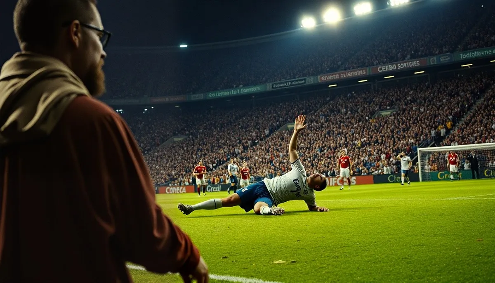

OKpolítico
OKpolíticoLa muerte de Jesús de Miguel no fue «un incidente de fútbol»
▶ Ver este video en YouTube y suscríbete

Opinión de Erick Moreno, director de OKpolítico, sobre la muerte del futbolista Jesús de Miguel, delantero del Tenerife, de 30 años, tras un choque con el portero del Andorra, Jesús Owono, el 3 de noviembre de 2026.
Compartir por WhatsAppEl hecho: la muerte de Jesús de Miguel
Un delantero murió tras un choque en plena cancha. Se llamaba Jesús de Miguel, tenía 30 años y jugaba para el CD Tenerife; el club confirmó su muerte el martes 3 de noviembre de 2026.
El partido era de Segunda División, la segunda categoría del fútbol profesional español, entre el Tenerife y el Andorra. La jugada ocurrió en el minuto 96, en tiempo añadido; El Español y Euronews la sitúan en el tiempo añadido, con el marcador empatado a dos.
✉️ Recibe lo importante del día en tu correo. Suscríbete gratis →Es decir, cuando el partido ya estaba en sus últimos segundos reglamentarios. El portero del Andorra, Jesús Owono, de 25 años, salió de su área para interceptar un balón y ambos chocaron.
Euronews indica que la rodilla del guardameta alcanzó a De Miguel, quien se desplomó; El País habla de un golpe con la pierna. Las dos versiones describen un choque en plena disputa por el balón.
De Miguel se desplomó y sufrió una parada cardiorrespiratoria en el césped: el corazón y la respiración se detuvieron. Que cita al club, la parada duró más de 20 minutos y el futbolista murió a las 8:00 del martes en el Hospital Universitario Nuestra Señora de Candelaria.
El País también informa que falleció esa mañana. El árbitro expulsó a Owono con tarjeta roja directa, es decir, sin amonestación previa, y suspendió el partido.
El Español recoge que la razón fue «fuerza excesiva». La expulsión es la única sanción deportiva documentada hasta ahora en las fuentes consultadas. La Policía Nacional abrió diligencias para esclarecer las circunstancias de la muerte. Euronews la describe como una posible investigación por «homicidio imprudente».
Ninguna autoridad ha determinado responsabilidades. El Tribunal Superior de Justicia de Canarias explicó que toda muerte sin causa natural obliga a abrir una investigación judicial de oficio.
El Español aclara que abrir diligencias no implica un delito ni determina la responsabilidad del guardameta. Mientras tanto, el fiscal jefe de Santa Cruz de Tenerife, José Luis Sánchez-Jáuregui, considera «muy difícil» que se abra un proceso penal,
porque el golpe se produjo en un lance del juego. El Español indica que la vía deportiva evaluará la infracción bajo el artículo 102 del reglamento.
Conviene entender qué significa cada vía. La penal determina si hubo un delito y, en su caso, quién responde. La deportiva evalúa la infracción según el reglamento; en este caso la evaluará bajo el artículo 102.
El mismo medio aclara que abrir diligencias no implica un delito ni determina la responsabilidad del guardameta. Por eso, hoy, ninguna autoridad ha determinado responsabilidades, y las dos vías siguen abiertas.
La Real Federación Española de Fútbol decretó la suspensión de los partidos de la Copa del Rey y de la Copa de la Reina en señal de respeto. La Copa del Rey es el torneo de copa masculino del fútbol español; la Copa de la Reina es su equivalente femenino.
Según Erick Moreno, director de OKpolítico, la muerte no debe llamarse «un incidente de fútbol». Opina que este caso implica la acción directa de otro jugador, a diferencia de las muertes por causas cardíacas o climáticas,
y que el término «homicidio involuntario» describe esa conducta sin afirmar intención de matar. Moreno sostiene que la expresión «homicidio involuntario» no es un insulto.
Es, dice, la descripción jurídica de que una persona murió por la acción de otra, sin que se afirme que hubo intención de matar. Y añade que es la que corresponde mientras un juez no diga otra cosa.
Lo que la autoridad deba determinar, como si hubo imprudencia grave o dolo, no lo decide la tribuna ni su texto. Moreno distingue este caso de otras muertes en el campo.
Las causas cardíacas o climáticas, dice, no tienen un responsable en la cancha; en cambio, aquí hubo la acción directa de otro jugador. Esa diferencia es la que, según él, obliga a no usar la palabra accidente.
Moreno sostiene que llamarlo «accidente» o «tragedia» equivale a decidir, antes que la justicia, que nadie responderá por la muerte. Esa es su postura y así se presenta; la determinación de si hubo imprudencia grave o dolo corresponde a las autoridades, no a esta nota.
Para Moreno, esa historia muestra que el fútbol ha tendido a normalizar la palabra accidente. La decisión de llamar así a cada caso, dice, se toma por costumbre y no por prueba; y eso es lo que el deporte profesional lleva décadas haciendo.
Moreno advierte que sería deshonesto decir que nunca un futbolista había muerto por la acción de otro jugador. Según su nota, ocurrió antes, y conviene conocerlo.
Moreno reconoce que sí hubo antes muertes causadas por la acción de otro jugador, aunque son antiguas. El caso más citado por la prensa es el de John Thomson, portero del Celtic,
que en 1931 murió con la cabeza fracturada tras recibir la rodilla de Sam English, del Rangers, al lanzarse por un balón en el clásico escocés.
Según los precedentes citados, una investigación de la época lo catalogó como accidente, aunque la presión pública llevó a la exoneración de English. Según la nota, los abucheos del público escocés empujaron después a Thomson a dejar el país.
Son datos de los precedentes que cita el texto de opinión, no de una sentencia. A esas se suman las muertes causadas por el clima. Según los precedentes que cita la nota,
el futbolista peruano José Hugo de la Cruz Meza falleció el 3 de noviembre de 2024 tras ser alcanzado por un rayo durante un partido en Perú. En febrero de 2024, otro rayo mató a un jugador en un partido en Bandung, Indonesia.
En esos casos, dice Moreno, no hay un responsable al que señalar. Es natural que el fútbol llore y siga adelante, aunque la nota recuerda que sí era evitable seguir jugando bajo una tormenta.
Antonio Puerta, del Sevilla, murió en agosto de 2007, tres días después de desvanecerse en un partido contra el Getafe. Dani Jarque, capitán del Espanyol, murió en 2009 de un paro cardíaco durante la pretemporada.
Para la nota, son tragedias de corazón, de genética, de un diagnóstico que no llegó a tiempo. Moreno sostiene que casi todas las muertes de futbolistas en plena cancha se deben a causas que ningún rival, árbitro o entrenador controla.
Cita el caso de Marc-Vivien Foé, mediocampista de Camerún, que se desplomó en 2003 en la semifinal de la Copa Confederaciones contra Colombia, en Lyon, por una miocardiopatía hipertrófica. Hasta ahora no hay sentencia y la investigación sigue abierta.
Las versiones tampoco coinciden en todo: El País habla de un golpe con la pierna y Euronews de un golpe con la rodilla. La discusión sobre la palabra que debe usarse no reemplaza lo que decidan las autoridades.
Esta nota presenta la postura de su director como opinión, con los hechos y precedentes atribuidos a sus fuentes. Lo que no ha sido sentenciado se dice como presunto; hasta hoy no hay condena contra nadie.
Sigue con OKpolítico para conocer lo que resuelvan la Policía, la vía deportiva y, en su caso, un juez. Moreno pide que sean las autoridades quienes determinen si hubo imprudencia grave o dolo.
Según él, ni la tribuna ni su texto deben hacerlo, pero el fútbol tampoco debería esconder esa palabra detrás de otra más cómoda.
Qué investiga la Policía y qué significa
La Policía Nacional abrió una investigación por la muerte de Jesús de Miguel, delantero del Tenerife de 30 años, tras el choque con el portero rival, Jesús Owono, durante el partido de Segunda División contra el Andorra.
Euronews señala que las diligencias buscan esclarecer las circunstancias de la muerte y describe la pesquisa como la de un posible «homicidio imprudente». Es una investigación en curso, no una condena ni una conclusión.
Esto es lo que consta en las fuentes. En el partido de Segunda División entre Tenerife y Andorra, con empate a dos en el tiempo añadido, el portero Jesús Owono salió de su área.
Su rodilla alcanzó a De Miguel, que se desplomó. El árbitro expulsó al guardameta con tarjeta roja directa, en el minuto 96 según El País, y suspendió el partido.
De Miguel sufrió una parada cardiorrespiratoria en el césped. Duró más de 20 minutos. El club Tenerife informó que murió a las 8:00 del martes 3 de noviembre en el Hospital Universitario Nuestra Señora de Candelaria, dato que también recoge El Español.
El Tribunal Superior de Justicia de Canarias explicó que toda muerte sin causa natural obliga a abrir una investigación judicial de oficio. De oficio quiere decir que las autoridades actúan por sí mismas, sin esperar una denuncia.
Por eso, que exista investigación no equivale a una acusación. El Español añade que el caso se ha judicializado, pero que abrir diligencias no implica un delito ni determina la responsabilidad del guardameta.
Según ese medio, hay dos caminos. La vía deportiva evaluará la infracción bajo el artículo 102 del reglamento, y la vía penal determinará si hubo «imprudencia penalmente relevante».
Hay una postura oficial que matiza el panorama. El fiscal jefe de Santa Cruz de Tenerife, José Luis Sánchez-Jáuregui, considera «muy difícil» que se abra un proceso penal, porque el golpe se produjo en un lance del juego.
Es una valoración del fiscal, no una resolución. La investigación policial sigue abierta. Resumamos lo que hay hasta aquí, solo con lo que consta en las fuentes. Hay una investigación de la Policía Nacional.
Hay una explicación del Tribunal Superior de Justicia de Canarias sobre por qué toda muerte sin causa natural se investiga de oficio. Hay dos vías posibles, la deportiva y la penal. Y hay una valoración del fiscal jefe que no es una resolución judicial.
En las fuentes consultadas no consta una sentencia ni una decisión judicial sobre la conducta del portero. Con ese marco de hechos delimitado, entra la opinión del director de OKpolítico, que presentamos como tal.
Una precisión de lenguaje. Las fuentes consultadas hablan de homicidio imprudente o por imprudencia. Erick Moreno, director de OKpolítico, opina que la expresión «homicidio involuntario» no es un insulto, sino la descripción jurídica de que una persona murió por la acción de otra,
sin afirmar que hubo intención de matar. Según Moreno, es la que corresponde mientras un juez no diga otra cosa. Moreno aclara que no le toca a la tribuna, ni a su texto, decidir si hubo imprudencia grave o dolo, es decir, intención.
Eso lo determinan las autoridades. Pero opina que el fútbol no puede esconder la palabra detrás de otra más cómoda. Según él, llamar «accidente», «tragedia» o «incidente» a todo lo que ocurre en una cancha es decidir, antes que la justicia, que nadie respondió por nada.
Moreno sostiene que, para entender por qué este caso es distinto, hay que mirar el historial del propio fútbol. Según su nota, casi todas las muertes de futbolistas en plena cancha se deben a causas que ningún rival, árbitro o entrenador controla.
Veamos los precedentes que cita. Sirven como contexto para su argumento, no como veredicto sobre el caso de Jesús de Miguel, y los presentamos atribuidos a su nota.
El primer grupo es el de las muertes de origen cardíaco. Según la nota de Moreno, Marc-Vivien Foé, mediocampista de Camerún, se desplomó en 2003 durante la semifinal de la Copa Confederaciones contra Colombia, en Lyon, por una miocardiopatía hipertrófica.
Antonio Puerta, del Sevilla, murió en agosto de 2007, tres días después de desvanecerse en un partido contra el Getafe. Y Dani Jarque, capitán del Espanyol, murió en 2009 de un paro cardíaco durante la pretemporada.
En los tres casos, dice la nota, la causa fue cardíaca y no la acción de un rival: tragedias de corazón, de genética, de un diagnóstico que no llegó a tiempo. El segundo grupo es el de las causas del clima.
Según la nota de Moreno, un rayo mató al futbolista peruano José Hugo de la Cruz Meza el 3 de noviembre de 2024 e hirió a otros jugadores. En febrero de 2024, otro rayo mató a un jugador durante un partido en Bandung, Indonesia.
Moreno señala que en ninguno de esos casos hay un responsable al que señalar, y que es natural que el fútbol llore y siga adelante. Pero opina que esas muertes sí podían evitarse si se suspendía el partido bajo una tormenta.
Es una opinión suya, no un dictamen de autoridad alguna. El tercer grupo es el de las muertes tras la acción de otro jugador.
Moreno reconoce que sería deshonesto decir que nunca había muerto un futbolista por la acción de otro. El caso más antiguo que recoge es el de John Thomson, portero del Celtic,
que murió en 1931 tras recibir la rodilla de Sam English, del Rangers, al lanzarse por un balón en el clásico escocés. La investigación de la época lo catalogó como accidente y eximió a English.
Para Moreno, ese antecedente ilustra la costumbre que critica: cerrar el asunto con la palabra más cómoda, por hábito y no por prueba. Aquí está el núcleo del argumento. Los casos cardíacos y los del clima no tienen a una persona cuya acción precediera a la muerte.
Thomson, en 1931, sí, y aun así se resolvió como accidente. Moreno opina que la muerte de Jesús de Miguel se parece más a ese segundo tipo,
el de una muerte después de la acción de otro jugador, y que por eso no encaja con la mayoría de los antecedentes que el fútbol había normalizado. Insistimos: es su lectura.
Ninguna resolución atribuye responsabilidad penal a Owono, y cualquier señalamiento sobre él es presunto. Por eso, opina Moreno,
la muerte de De Miguel no fue «un incidente de fútbol»: murió por la acción de otra persona en la cancha, algo distinto a lo que el deporte había normalizado. Esa es su lectura.
El fiscal jefe ve un lance del juego con pocas probabilidades de llegar a proceso penal. Las dos posturas coexisten mientras la investigación siga abierta.
Hasta donde consta en las fuentes, Jesús Owono, portero del Andorra de 25 años, no ha sido sentenciado ni hay una resolución judicial sobre su conducta. Cualquier señalamiento sobre él es presunto.
El árbitro lo expulsó por «fuerza excesiva»: es una decisión deportiva durante el partido, distinta de la investigación de la Policía y, en su caso, de un juez. Conviene decir también qué no dicen las fuentes.
Las crónicas consultadas no detallan resultados de autopsia ni una declaración de Owono, y tampoco informan de una decisión sobre el artículo 102 del reglamento. Por eso, cualquier afirmación sobre la causa exacta de la muerte, más allá de la parada cardiorrespiratoria que reportan, sería especulación, y la parte informativa de este video no la hará.
Lo que sí consta es que la parada ocurrió en el césped, que duró más de 20 minutos según Euronews y que De Miguel murió a las 8:00 del martes 3 de noviembre,
según informó el club Tenerife. La RFEF decretó la suspensión de los partidos de Copa del Rey y de la Copa de la Reina en señal de respeto.
La pregunta que queda abierta es jurídica: si las diligencias llegan a una imputación por imprudencia o se archivan por tratarse de una jugada de juego. Hasta que lo defina un juez, ese es el límite de lo que se puede afirmar.
Cerremos con la palabra, que es el centro de esta opinión. Moreno defiende que llamar «homicidio involuntario» a una muerte tras la acción de otra persona no es un insulto, sino una descripción jurídica mientras un juez no diga otra cosa.
El fiscal jefe, por su parte, ve «muy difícil» un proceso penal porque el golpe se produjo en un lance del juego. Ambas posturas pueden sostenerse a la vez porque la investigación sigue abierta.
Lo que no cabe es dar el caso por resuelto, ni para condenar ni para absolver. Seguiremos informando lo que resuelvan la Policía, la vía deportiva y, en su caso, un juez.
La tesis de Erick Moreno: la palabra importa
Según Erick Moreno, director de OKpolítico, la muerte de Jesús de Miguel no fue «un incidente de fútbol». El delantero del Tenerife, de 30 años, murió tras un choque con el portero del Andorra, Jesús Owono, durante un partido de Segunda División en España.
Moreno sostiene que, a diferencia de otras muertes ocurridas en una cancha, aquí hubo una acción directa de un jugador sobre otro. La jugada ocurrió en el tiempo añadido, en el minuto 96, con empate a dos.
Owono salió de su área para interceptar un balón y ambos chocaron. El País señala que el portero golpeó a De Miguel con la pierna, mientras que Euronews habla de la rodilla.
Moreno describe un golpe en el pecho «a toda velocidad». Las crónicas consultadas no mencionan el pecho: hablan de la pierna o de la rodilla.
Moreno usa la expresión «homicidio involuntario». Según él, no es un insulto: es la descripción jurídica de que una persona murió por la acción de otra, sin afirmar que hubo intención de matar.
Las crónicas usan un término cercano: Euronews habla de un posible «homicidio imprudente», y El País informa, en el título de su nota, de diligencias judiciales contra Owono por homicidio imprudente. Se trata de diligencias abiertas; no hay condena contra nadie.
El club Tenerife informó que De Miguel sufrió una parada cardiorrespiratoria de más de 20 minutos y murió a las 8:00 del martes 3 de noviembre en el Hospital Universitario Nuestra Señora de Candelaria.
El árbitro expulsó a Owono con tarjeta roja directa por «fuerza excesiva» y suspendió el partido. La Policía Nacional abrió una investigación para esclarecer las circunstancias del choque.
Hay una voz que pone freno a la discusión penal. El fiscal jefe de Santa Cruz de Tenerife, José Luis Sánchez-Jáuregui, considera «muy difícil» que se abra un proceso penal, porque el golpe se produjo en un lance del juego.
El Español precisa que abrir diligencias no implica un delito ni determina la responsabilidad del guardameta. Hay, por tanto, dos lecturas de la jugada. La de Moreno, que habla de homicidio involuntario y pide que la justicia decida.
Y la del fiscal jefe, que considera «muy difícil» un proceso penal porque el golpe se produjo en un lance del juego. Entre ambas, la investigación sigue abierta, y la Policía Nacional tiene que esclarecer las circunstancias de la muerte.
Moreno concentra su argumento en el vocabulario. Llamar «accidente», «tragedia» o «incidente» a todo lo que ocurre en una cancha, dice, es decidir antes que la justicia que nadie respondió por nada.
Según él, esa decisión se toma por costumbre y no por prueba. Moreno no se pronuncia sobre la culpabilidad: pide que las autoridades determinen si hubo imprudencia grave o dolo, y afirma que eso no lo determina la tribuna ni su propio texto.
El Tribunal Superior de Justicia de Canarias explicó que toda muerte que no tiene causa natural obliga a abrir una investigación judicial de oficio. La vía deportiva evaluará la infracción bajo el artículo 102 del reglamento, mientras la vía penal determinará si hubo «imprudencia penalmente relevante».
La RFEF suspendió los partidos de Copa del Rey y de la Copa de la Reina en señal de respeto. Para entender el alcance de la noticia, conviene separar dos vías. La deportiva evalúa la infracción con el artículo 102 del reglamento.
La penal la lleva la justicia: la Policía abre diligencias, después se determina si hubo «imprudencia penalmente relevante» y, solo si procede, puede haber una imputación. Ninguna de esas etapas equivale a una condena.
Conviene reconstruir primero lo que consta en las crónicas. El partido de Segunda División enfrentaba al Tenerife con el Andorra. En el tiempo añadido, con el marcador 2-2, el portero Jesús Owono salió de su área para interceptar un balón y chocó con Jesús de Miguel.
El delantero, de 30 años, sufrió una parada cardiorrespiratoria en el césped. Según el club Tenerife, esa parada duró más de 20 minutos. De Miguel murió a las 8:00 del martes 3 de noviembre de 2026 en el Hospital Universitario Nuestra Señora de Candelaria.
El árbitro expulsó a Owono con roja directa y suspendió el partido. Estos son los hechos en los que coinciden las crónicas consultadas, y sobre ellos Erick Moreno construye su opinión.
Esta es la opinión de Erick Moreno, director de OKpolítico. Los hechos provienen de las crónicas de El País, El Español y Euronews, y los antecedentes son los que menciona su nota.
Lo no sentenciado se dice con «presunto». Sigue con OKpolítico para conocer lo que resuelvan la Policía, la vía deportiva y, en su caso, un juez.
Lo que todavía no está resuelto es mucho. Hasta ahora consta la apertura de diligencias por parte de la Policía Nacional y la evaluación que hará la vía deportiva con el artículo 102 del reglamento.
No hay imputación formal ni condena contra nadie. El fiscal jefe de Santa Cruz de Tenerife considera «muy difícil» un proceso penal, mientras que la vía penal determinará si hubo imprudencia penalmente relevante.
Este video reúne lo que consta en las crónicas; cualquier novedad se verificará con fuente oficial. Para Moreno, este caso es distinto.
En la mayoría de los antecedentes que recuerda, la causa estuvo en un diagnóstico médico o fuera de la cancha. Aquí, según su texto, la causa no fue un diagnóstico ni el clima, sino el choque entre dos jugadores.
Por eso, dice, el caso es distinto a lo que se había normalizado en el deporte profesional. Moreno reconoce que existe un precedente lejano de muerte por la acción de otro jugador, el de 1931, que veremos más adelante.
El núcleo de la nota es una costumbre. Llamar «accidente», «tragedia» o «incidente» a casi todo lo que ocurre en una cancha, según Moreno, es decidir antes que la justicia, y esa decisión se toma por costumbre y no por prueba.
«Pero el fútbol no puede esconder esa palabra detrás de otra más cómoda», escribe. Para Moreno, la discusión es de lenguaje y de método.
La palabra «homicidio involuntario», según su texto, no es un insulto: es la descripción jurídica de que una persona murió por la acción de otra, sin afirmar intención de matar. Es, además, la que corresponde mientras un juez no diga otra cosa.
Que las autoridades determinen si hubo imprudencia grave o dolo; no lo determina la tribuna, ni este texto. El antecedente más antiguo que recoge la nota es el de John Thomson, portero del Celtic.
En 1931 murió siendo muy joven, con la cabeza fracturada, tras recibir la rodilla de Sam English, del Rangers, al lanzarse por un balón en el clásico escocés. Una investigación de la época lo catalogó como accidente.
Moreno no niega el precedente: escribe que «sería deshonesto decir que nunca había muerto un futbolista por la acción de otro: ocurrió antes, y conviene conocerlo». El primer grupo de casos que menciona la nota son muertes por causas cardíacas.
Marc-Vivien Foé, mediocampista de Camerún, se desplomó en 2003 en la semifinal de la Copa Confederaciones contra Colombia, en Lyon. Antonio Puerta, del Sevilla, murió en agosto de 2007, siendo muy joven, tres días después de desvanecerse en un partido contra el Getafe.
Dani Jarque, capitán del Espanyol, murió en 2009 de un paro cardíaco durante la pretemporada. Según la nota, son tragedias de corazón y de diagnósticos que no llegaron a tiempo.
El segundo grupo de casos que menciona la nota son los provocados por el clima. Según el texto de Moreno, el futbolista peruano José Hugo de la Cruz Meza murió el 3 de noviembre de 2024 tras ser alcanzado por un rayo durante un partido,
y en febrero de 2024 otro rayo mató a un jugador en Bandung, Indonesia. Moreno sostiene que en esos casos no hay un responsable al que señalar, aunque, a su juicio, sí era evitable suspender un partido bajo una tormenta.
Es su lectura, y sirve para ubicar cada muerte en una categoría distinta. Moreno propone revisar el historial antes de juzgar el lenguaje.
Según su nota, casi todas las muertes de futbolistas en plena cancha se deben a causas que ningún rival, árbitro o entrenador controla. La pregunta, entonces, no es si el fútbol ha tenido muertes, sino en qué categoría cae cada una: una causa médica, una causa externa o la acción de otro jugador.
El historial: muertes por causas que nadie controla
Según Erick Moreno, director de OKpolítico, casi todas las muertes de futbolistas en plena cancha se deben a causas que ningún rival, árbitro o entrenador controla. Ese es el primer eje de su postura: lo que el fútbol había normalizado eran, en su lectura, tragedias sin una persona a la que atribuir la causa.
Antes de llegar al caso de Jesús de Miguel, la nota repasa ese historial. La nota menciona tres casos de causa cardíaca: Marc-Vivien Foé en 2003, Antonio Puerta en 2007 y Dani Jarque en 2009.
Según Moreno, en ninguno hubo un rival cuya acción provocara la muerte. Las describe como muertes de corazón, de genética y de un diagnóstico que no llegó a tiempo.
La nota suma dos muertes por rayo: la del futbolista peruano José Hugo de la Cruz Meza, el 3 de noviembre de 2024, y la de un jugador en Bandung, Indonesia, en febrero de 2024.
Moreno sostiene que en esos casos la causa estaba fuera del alcance del fútbol, aunque suspender un partido bajo tormenta sí era evitable. Según la nota, es natural que el deporte llore y siga adelante cuando no hay un responsable al que señalar.
Moreno reconoce que sí hubo antecedentes de un futbolista muerto por la acción de otro. El caso más antiguo que recoge la nota es el de John Thomson, portero del Celtic,
que murió en 1931 tras recibir la rodilla de Sam English, del Rangers, en el clásico escocés. Según la nota, una investigación lo consideró accidente y eximió a English; aun así, los abucheos del público lo empujaron a dejar el país.
Según la nota, la investigación de la época catalogó la muerte de Thomson como accidente y eximió a English. Moreno lo usa como antecedente para su argumento, no como prueba de lo que ocurrió en 2026.
Esa distinción es la base de su postura: el precedente da contexto, pero cada caso debe valorarse por sus propios hechos y por lo que resuelvan las autoridades. Ese historial contrasta con lo que documentan las fuentes del caso de 2026.
Jesús de Miguel, de 30 años, delantero del Tenerife, sufrió una parada cardiorrespiratoria tras chocar con el portero del Andorra, Jesús Owono, de 25 años. El árbitro expulsó al portero con tarjeta roja directa y suspendió el partido.
El País describe a Owono como guardameta ecuatoguineano del Andorra, de 25 años. El Español precisa que el árbitro lo expulsó por «fuerza excesiva» y suspendió el partido.
Esa decisión arbitral es una valoración deportiva tomada en el momento. No es una calificación penal ni una sentencia, y por eso conviene decir con cuidado que lo ocurrido en la jugada es, hasta ahora,
un presunto hecho sujeto a investigación y no una responsabilidad probada. Para ubicar el caso en el tiempo: según El Español y Euronews, la jugada ocurrió en el tiempo añadido,
con el marcador empatado a dos, en un partido de Segunda División entre el Tenerife y el Andorra. El País sitúa la tarjeta roja en el minuto 96. Owono salió de su área para interceptar un balón y ambos chocaron.
Son los hechos en los que las crónicas coinciden. Lo que ocurrió exactamente en la jugada es materia de la investigación en curso, y nadie ha sido declarado responsable de nada.
Las crónicas no coinciden del todo en la descripción de la jugada. El País habla de un golpe con la pierna; Euronews, de que la rodilla del portero alcanzó a De Miguel, quien se desplomó.
Lo que sí coincide es que Owono salió de su área a disputar el balón. Euronews añade que la Policía Nacional abrió diligencias y calificó el caso como posible «homicidio imprudente».
Sobre el desenlace, Euronews informa que el club Tenerife comunicó que De Miguel murió a las 8:00 del martes 3 de noviembre en el Hospital Universitario Nuestra Señora de Candelaria,
tras una parada cardiorrespiratoria de más de 20 minutos. El País coincide en que el delantero sufrió la parada en el césped y falleció esa mañana.
Son los datos médicos y de tiempo que constan hasta ahora. Las causas precisas de la muerte corresponden a las autoridades competentes, no a este análisis ni a la opinión de nadie.
El fiscal jefe de Santa Cruz de Tenerife, José Luis Sánchez-Jáuregui, considera “muy difícil” que se abra un proceso penal, porque el golpe se produjo en un lance del juego.
El Tribunal Superior de Justicia de Canarias explicó, en cambio, que toda muerte sin causa natural obliga a abrir una investigación de oficio. El Español aclara que abrir diligencias no implica un delito ni determina la responsabilidad del guardameta.
Euronews reporta que la Real Federación Española de Fútbol decretó la suspensión de los partidos de Copa del Rey y de Copa de la Reina en señal de respeto. Es una reacción institucional del fútbol español que recoge esa fuente.
Muestra la dimensión que tuvo la muerte de De Miguel dentro del deporte, aunque la federación no ha determinado ninguna responsabilidad. Esa decisión no sustituye ni anticipa lo que resuelvan la Policía, la vía deportiva o un juez.
El caso se evaluará por dos vías. La deportiva analizará la infracción bajo el artículo 102 del reglamento. La penal determinará si hubo «imprudencia penalmente relevante». Son procesos distintos, con criterios distintos, y ninguno ha concluido.
Por eso, cuando Moreno habla de la palabra que debe usarse, se refiere a un debate público sobre el lenguaje. La calificación jurídica la hará quien tiene la facultad de hacerlo, y mientras tanto lo no sentenciado se dice con «presunto».
El Español añade un dato que ayuda a leer el caso con serenidad: se ha judicializado, pero la apertura de diligencias no implica un delito ni determina la responsabilidad del guardameta. Es decir, hay una investigación formal, como en cualquier muerte sin causa natural, y aún no hay una conclusión sobre si alguien actuó con imprudencia.
Esa precisión es parte de los hechos y debe acompañar cualquier opinión, incluida la de Moreno, que se presenta aquí como lo que es: una postura editorial. Moreno sostiene que homicidio involuntario describe jurídicamente que una persona murió por la acción de otra, sin afirmar intención de matar.
Precisa que corresponde a las autoridades determinar si hubo imprudencia grave o dolo. Según él, el deporte no debe esconder esa palabra detrás de otra más cómoda.
Conviene poner las posturas una junto a la otra. Moreno opina que llamar «accidente» a todo lo que ocurre en una cancha es decidir antes que la justicia.
El fiscal jefe de Santa Cruz de Tenerife considera «muy difícil» un proceso penal porque el golpe se produjo en un lance del juego. La Policía Nacional, por su parte, abrió diligencias, y el TSJ de Canarias recordó que toda muerte sin causa natural obliga a una investigación de oficio.
Son voces distintas y ninguna es todavía una resolución. Cada una merece escucharse con sus límites. Según Erick Moreno, esa decisión, tomada por costumbre y no por prueba, es lo que el deporte profesional lleva décadas haciendo.
Para él, el caso de Jesús de Miguel es distinto porque hubo una acción directa de otro jugador. La determinación final corresponde a la justicia, que aún no ha calificado los hechos.
La postura de Erick Moreno se mantiene como opinión: para él, la muerte de Jesús de Miguel no fue «un incidente de fútbol» y es distinta a lo que el deporte había normalizado.
Los precedentes históricos sirven para dar contexto, no para decidir lo que ocurrió en este caso. Lo que ocurrió lo definirán la Policía, la vía deportiva y, en su caso, un juez.
Sigue con OKpolítico para conocer lo que resuelvan, con los hechos separados de las opiniones y con la palabra exacta para cada cosa. Resumamos lo verificado.
Jesús de Miguel, de 30 años, murió el 3 de noviembre de 2026 tras una parada cardiorrespiratoria después de chocar con el portero Jesús Owono en un partido de Segunda División. Owono fue expulsado y el partido se suspendió. La Policía Nacional abrió diligencias.
El fiscal jefe ve «muy difícil» un proceso penal, y el TSJ de Canarias explicó que la investigación de oficio es obligatoria en estos casos. No hay condena contra nadie, y lo no sentenciado debe decirse con «presunto».
Las muertes por el clima
Dos muertes por rayo que Erick Moreno ubica en 2024 forman parte de su argumento. El director de OKpolítico opina que, además de las causas cardíacas, el clima provoca muertes en la cancha que nadie en el juego controla.
Según su nota, un rayo mató al futbolista José Hugo de la Cruz Meza en Perú y hirió a otros jugadores. La nota de Moreno no ubica el clima dentro de la cancha, sino como una causa externa a ella.
Esa diferencia sostiene su argumento: un rayo no es un jugador, y en los casos que cita no aparece ningún rival al que atribuir una acción. Según el texto, lo que sí puede depender de una persona es la decisión de seguir jugando con tormenta.
Por eso el director distingue entre lo que nadie controla y lo que alguien pudo evitar, y pone el caso de Tenerife en la segunda categoría. Esa distinción, según su nota, es la que organiza el resto del texto.
Según la nota, en febrero de 2024 otro rayo mató a un jugador durante un partido en Bandung, Indonesia. El texto no da el nombre del futbolista ni más detalles.
Por eso ese caso se presenta solo como afirmación de Moreno, sin una crónica independiente que lo confirme. La primera parte de la nota reúne las muertes que el director atribuye a causas del corazón.
Según el texto, Marc-Vivien Foé, mediocampista de Camerún, se desplomó en 2003 en la semifinal de la Copa Confederaciones contra Colombia, en Lyon, por una miocardiopatía hipertrófica. Moreno escribe que son tragedias de genética y de un diagnóstico que no llegó a tiempo.
Para él, ningún rival, árbitro o entrenador podía controlar esas causas, y por eso la reacción colectiva en esos casos fue de duelo y no de búsqueda de responsables. Moreno opina que en esos casos no hay un responsable al que señalar y que es natural que el fútbol llore y siga adelante.
Su razonamiento, según él, es que la causa estaba fuera del alcance de quienes participaban en el partido. Para el director, ahí el duelo colectivo es la reacción esperable.
A la lista de Foé, la nota suma otros dos casos de causa cardíaca. Según Moreno, Antonio Puerta, del Sevilla, murió en agosto de 2007, siendo muy joven, tres días después de desvanecerse en un partido contra el Getafe.
Dani Jarque, capitán del Espanyol, murió en 2009 de un paro cardíaco durante la pretemporada. El director los incluye para mostrar que, en esos episodios, el origen estuvo en el organismo del futbolista y no en una acción de otro jugador.
Así, la nota prepara el terreno para separar esos casos del que analiza después. Estos tres casos, según Moreno, comparten algo: el origen estuvo en el cuerpo del futbolista, en un corazón que falló y en un diagnóstico que no llegó a tiempo.
Ningún rival, árbitro o entrenador podía provocar esas muertes, y según el texto ninguno de los que jugaban aquella tarde tuvo forma de evitarlas en el campo. Por eso el director los separa del caso de Tenerife.
Pero Moreno añade una salvedad que él mismo escribe: aunque la causa estaba fuera de su alcance, sí era evitable suspender un partido bajo una tormenta. Es decir, opina que incluso sin agresor hubo una decisión humana posible antes de la tragedia. Su nota no sostiene que todo sea inevitable.
Sobre los rayos, la nota es breve en cada caso, pero plantea una distinción concreta. Según Moreno, la descarga estaba fuera del alcance de los jugadores, mientras que suspender el partido bajo una tormenta sí era evitable.
El texto recuerda que, en Perú, además de la muerte de José Hugo de la Cruz Meza, la descarga hirió a otros jugadores; y que en Bandung, en febrero de 2024, otro rayo mató a un jugador.
Sin más detalles disponibles, son afirmaciones de la nota, no hechos confirmados por separado. Esa salvedad pesa en su argumento general.
Según Moreno, el problema es llamar «accidente», «tragedia» o «incidente» a todo lo que ocurre en una cancha, porque eso equivale a decidir, antes que la justicia, que nadie respondió por nada. Opina que esa costumbre, y no la prueba, es lo que el deporte profesional lleva décadas haciendo.
El caso más antiguo que recoge la nota es el de John Thomson, portero del Celtic. Según Moreno, en 1931 murió siendo muy joven, con la cabeza fracturada, tras recibir la rodilla de Sam English, del Rangers, al lanzarse por un balón en el clásico escocés.
El texto señala que una investigación consideró el hecho un accidente y eximió a English. Moreno usa ese precedente para sostener que el deporte ya conoció muertes por la acción de otro jugador, y que conviene recordarlas en vez de olvidarlas.
Esa es, según él, la razón para no repetir la fórmula del accidente sin examinar cada caso. Para contrastar: en el caso de Jesús de Miguel, el Tribunal Superior de Justicia de Canarias explicó
que «toda muerte que no tiene causa natural» conlleva la apertura de oficio de una investigación judicial. La nota no dice si los casos de Perú e Indonesia tuvieron alguna investigación, y no hay información disponible que permita afirmar que no la hubo.
La apertura de diligencias tampoco define el resultado. La vía deportiva evaluará la infracción bajo el artículo 102 del reglamento, mientras la vía penal determinará si hubo «imprudencia penalmente relevante».
Son dos procesos distintos, y hasta ahora no se conoce ninguna resolución en ninguno de los dos. Lo confirmado es que la Policía Nacional abrió diligencias y que el caso se judicializó. Para la nota de Moreno,
el valor del caso está en esa diferencia: que exista una investigación no equivale a que haya un culpable, pero tampoco autoriza a decidir de antemano que nadie respondió.
Sobre el caso de Tenerife, las fuentes no coinciden del todo con la lectura de Moreno. La Policía Nacional abrió diligencias por un posible «homicidio imprudente» pero El Español precisa que abrir diligencias no implica un delito ni determina la responsabilidad del portero Jesús Owono.
El fiscal jefe de Santa Cruz de Tenerife, José Luis Sánchez-Jáuregui, considera «muy difícil» que se abra un proceso penal porque el golpe se produjo en un lance del juego.
Qué significa «homicidio imprudente». La Policía Nacional abrió diligencias por un posible homicidio imprudente. Abrir diligencias no implica que exista un delito ni determina la responsabilidad del guardameta.
Es una hipótesis que la autoridad debe comprobar, no una conclusión sobre quién tuvo la culpa. La jugada ocurrió en el tiempo añadido, con empate a dos.
Owono salió de su área para interceptar un balón y ambos chocaron. Euronews describe que la rodilla del portero alcanzó a De Miguel, que se desplomó.
El árbitro expulsó al portero con roja directa, por «fuerza excesiva», y suspendió el partido. Las versiones coinciden en el marco del choque, pero no en la forma exacta del golpe: El País habla de un golpe con la pierna, mientras Euronews menciona la rodilla.
Esa diferencia no está resuelta en las fuentes disponibles. Los datos básicos del caso: Jesús de Miguel tenía 30 años y jugaba como delantero del Tenerife.
Jesús Owono, de 25 años, es guardameta del Andorra y de nacionalidad ecuatoguineana. El partido era de Segunda División y se jugaba con empate a dos cuando ocurrió el choque.
Los hechos de Tenerife son que De Miguel, de 30 años, sufrió una parada cardiorrespiratoria tras el choque con Owono en el minuto 96. Según el club Tenerife, citado por Euronews, la parada duró más de 20 minutos; murió a las 8:00 del 3 de noviembre en el Hospital Universitario Nuestra Señora de Candelaria.
Por eso Moreno separa este caso de los rayos y de los infartos: opina que aquí intervino la acción de otra persona y que no fue «un incidente de fútbol». Euronews informa también que la RFEF decretó la suspensión de los partidos de Copa del Rey y de la Copa de la Reina en señal de respeto.
Ese gesto no determina responsabilidades. Mientras las investigaciones sigan abiertas, cualquier responsabilidad es presunta: no hay condena contra nadie, y las vías deportiva y penal aún no han resuelto nada.
Para OKpolítico, lo verificable hoy es la muerte, la apertura de diligencias y las posturas de las autoridades citadas en este video. Lo que sigue abierto: la vía deportiva evaluará la infracción bajo el artículo 102 del reglamento, y la vía penal decidirá si hubo imprudencia penalmente relevante.
Hasta ahora no hay resolución conocida en ninguna de las dos. OKpolítico seguirá lo que determinen la Policía, la vía deportiva y, en su caso, un juez.
El antecedente de 1931 y por qué, según Moreno, esto es distinto
Según Erick Moreno, director de OKpolítico, sería deshonesto decir que nunca había muerto un futbolista por la acción de otro: ocurrió antes, y conviene conocerlo. Según su nota, el caso más antiguo que recoge la prensa es el de John Thomson, portero del Celtic.
De acuerdo con la nota de Moreno, Thomson murió en 1931 con la cabeza fracturada, tras recibir la rodilla de Sam English, del Rangers, cuando se lanzó por un balón en el clásico escocés.
Moreno no lo presenta como un caso único: Thomson es, según su nota, el caso más antiguo que recoge la prensa. Una investigación consideró el hecho un accidente y eximió a English.
Aun así, según la misma nota, los abucheos del público escocés empujaron a English a dejar el país. Moreno usa este precedente para mostrar cómo se resolvió el caso en aquella época.
Para Moreno, el precedente no desmiente su tesis: la sostiene en lo esencial, porque muestra que la categoría de «accidente» tiene una larga historia en el fútbol. Según su nota, esa costumbre es una decisión tomada por hábito y no por prueba.
Moreno distingue este antecedente de la mayoría de las muertes en la cancha. Según su nota, casi todas se deben a causas que ningún rival, árbitro o entrenador controla.
Menciona a Marc-Vivien Foé, en 2003; a Antonio Puerta, en 2007; y a Dani Jarque, en 2009: los tres murieron por causas cardíacas, no por la acción de un rival. A ellos suma las muertes por causas externas al juego: el futbolista peruano José Hugo de la Cruz Meza,
alcanzado por un rayo el 3 de noviembre de 2024, y un jugador indonesio que murió por un rayo en Bandung en febrero de 2024.
Según Moreno, en esos casos no hay un responsable al que señalar. El 3 de noviembre de 2026, el delantero del Tenerife Jesús de Miguel, de 30 años,
murió en el Hospital Universitario Nuestra Señora de Candelaria, tras chocar con el portero del Andorra, Jesús Owono, en un partido de Segunda División. Owono había salido de su área a interceptar un balón; según Euronews, su rodilla alcanzó a De Miguel, quien se desplomó.
Moreno describe el golpe como un impacto en el pecho. La jugada ocurrió en el tiempo añadido, con el marcador empatado a dos.
El árbitro expulsó a Owono, de 25 años, con roja directa por «fuerza excesiva» y suspendió el partido. De acuerdo con el club Tenerife, De Miguel murió a las 8:00 del martes 3 de noviembre, tras una parada cardiorrespiratoria de más de 20 minutos.
La Policía Nacional investiga la muerte como un posible homicidio por imprudencia, es decir, una muerte causada sin intención. Euronews recoge que se abrieron diligencias para esclarecer las circunstancias.
El Español aclara que abrir diligencias no implica un delito ni determina la responsabilidad del guardameta. El fiscal jefe de Santa Cruz de Tenerife, José Luis Sánchez-Jáuregui, considera «muy difícil» que se abra un proceso penal,
porque el golpe se produjo en un lance del juego. En cambio, el Tribunal Superior de Justicia de Canarias explicó que toda muerte sin causa natural obliga a abrir de oficio una investigación judicial.
Moreno sostiene que «homicidio involuntario» no es un insulto: según su nota, es la descripción jurídica de que una persona murió por la acción de otra, sin que se afirme que hubo intención de matar.
Para él, es el término que corresponde mientras un juez no diga otra cosa. Conviene precisar que las fuentes consultadas hablan de un posible homicidio imprudente y de diligencias abiertas, no de una acusación ni de una condena contra Owono.
Moreno opina que llamar «accidente», «tragedia» o «incidente» a todo lo que ocurre en una cancha es decidir, antes que la justicia, que nadie respondió por nada. Escribe: «Pero el fútbol no puede esconder esa palabra detrás de otra más cómoda», en referencia a «homicidio involuntario».
Según su nota, determinar si hubo imprudencia grave o dolo corresponde a las autoridades, no a la tribuna. La vía deportiva evaluará la infracción bajo el artículo 102 del reglamento mientras la vía penal define si hubo imprudencia penalmente relevante.
La Real Federación Española de Fútbol suspendió los partidos de Copa del Rey y de la Copa de la Reina en señal de respeto. La investigación sigue abierta.
Contraste: lo que dicen las autoridades y los datos
La Policía investiga la muerte de Jesús de Miguel, pero un fiscal ve difícil un proceso penal. El fiscal jefe de Santa Cruz de Tenerife, José Luis Sánchez-Jáuregui, considera «muy difícil» que se abra una causa, porque el golpe ocurrió en un lance del juego.
Es una valoración de un funcionario, no una resolución judicial. Una opinión debe contrastarse con lo documentado. Opina Erick Moreno, director de OKpolítico, que la muerte no fue «un incidente de fútbol».
Según su postura, una persona murió por la acción de otra y eso debe llamarse por su nombre jurídico mientras un juez no diga otra cosa. El fiscal, en cambio, pone el acento en que fue una acción propia del juego.
Moreno explica por qué defiende la expresión «homicidio involuntario». Según su nota, no es un insulto: es la descripción jurídica de que una persona murió por la acción de otra, sin que se afirme que hubo intención de matar.
Opina que es la que corresponde mientras un juez no diga otra cosa. Moreno aclara también que son las autoridades las que deben determinar si hubo imprudencia grave o dolo, y que no lo determina la tribuna ni su texto.
Por eso, en este video, lo no sentenciado se dice con «presunto»: no hay condena contra nadie. Los hechos que reportan las fuentes: Jesús de Miguel, delantero del Tenerife, de 30 años, sufrió una parada cardiorrespiratoria en el partido de Segunda División contra el Andorra.
Duró más de 20 minutos. Murió a las 8:00 del martes 3 de noviembre en el Hospital Universitario Nuestra Señora de Candelaria.
Para ubicar el caso, conviene repasar lo mínimo que consignan las crónicas. El partido era de Segunda División, entre el Tenerife y el Andorra. De Miguel sufrió una parada cardiorrespiratoria en el césped y falleció esa mañana.
El Español y Euronews coinciden en que murió en el Hospital Universitario Nuestra Señora de Candelaria, y Euronews añade que fue el club Tenerife el que informó de la hora. El portero del Andorra es ecuatoguineano y tiene 25 años. Hasta aquí, los datos; lo que sigue son valoraciones.
La jugada ocurrió en el tiempo añadido, con empate a dos. El portero del Andorra, Jesús Owono, de 25 años, salió de su área y chocó con De Miguel.
El árbitro lo expulsó con roja directa, por «fuerza excesiva» según El Español, y suspendió el partido. El País ubica la acción en el minuto 96.
Sobre la investigación hay datos oficiales que matizan. El Tribunal Superior de Justicia de Canarias explicó que toda muerte sin causa natural obliga a abrir una investigación de oficio.
El País informa que la Policía Nacional abrió una investigación por la muerte del jugador. Euronews añade que abrió diligencias para esclarecer las circunstancias y que la califica como un posible «homicidio imprudente».
¿Qué significa que haya diligencias? El Español lo explica con cautela: el caso se ha judicializado, pero abrir diligencias no implica un delito ni determina la responsabilidad del guardameta.
Es decir, la investigación busca esclarecer qué pasó. El TSJ de Canarias precisó que es un trámite que se activa ante toda muerte sin causa natural.
Por eso conviene distinguir entre investigar una muerte y acusar a una persona. Lo primero ya ocurrió, según las fuentes; lo segundo, hasta ahora, no aparece documentado en el material consultado, y corresponde a las autoridades.
Aquí hay una diferencia de términos. Moreno usa «homicidio involuntario»; las fuentes consultadas hablan de homicidio imprudente o por imprudencia. El Español recuerda que abrir diligencias no implica un delito ni determina la responsabilidad del portero.
Añade que la vía penal definirá si hubo «imprudencia penalmente relevante», y la deportiva evaluará la infracción bajo el artículo 102 del reglamento. Moreno afirma que el fútbol, y buena parte de la prensa, prefieren llamar «accidente» a este tipo de hechos.
Es su apreciación como director de OKpolítico; este video no cuenta con un conteo independiente de cómo lo han nombrado los medios. Lo que sí está en las fuentes consultadas es el vocabulario del caso: Euronews habla de un posible «homicidio imprudente» en la investigación policial,
y el fiscal jefe habla de un lance del juego. Son dos formas de nombrar la misma jugada, y Moreno sostiene que la palabra importa.
Moreno recurre a la historia. Según su nota, Marc-Vivien Foé murió en 2003, en la Copa Confederaciones, por una miocardiopatía hipertrófica. Antonio Puerta murió en 2007 y Dani Jarque en 2009, por un paro cardíaco.
Moreno los describe como tragedias de corazón, de genética, de un diagnóstico que no llegó a tiempo: muertes por causas que ningún rival, árbitro o entrenador controla. Opina que el caso de De Miguel es distinto a lo normalizado.
Moreno detalla otros dos casos. Según su nota, Marc-Vivien Foé, mediocampista de Camerún, se desplomó en 2003 en la semifinal de la Copa Confederaciones contra Colombia, en Lyon.
Antonio Puerta, del Sevilla, murió en agosto de 2007, siendo muy joven, tres días después de desvanecerse en un partido contra el Getafe. Para la nota, son tragedias de corazón y de genética, con un diagnóstico que no llegó a tiempo.
En ninguno de estos casos un rival fue la causa de la muerte. Moreno suma otro grupo de casos: los que causa el clima. Según su nota,
un rayo mató al futbolista peruano José Hugo de la Cruz Meza el 3 de noviembre de 2024, y en febrero de 2024 otro rayo mató a un jugador en un partido en Bandung, Indonesia.
Moreno señala que en ninguno de esos casos hay un responsable al que señalar, y que es natural que el fútbol llore y siga adelante, porque la causa estaba fuera de su alcance.
Aun así, opina que sí era evitable suspender un partido bajo una tormenta. La nota de Moreno también recuerda a John Thomson, portero del Celtic, que murió en 1931 tras recibir la rodilla de Sam English, del Rangers.
Moreno admite que sería deshonesto decir que nunca había muerto un futbolista por la acción de otro. Según la nota, una investigación de la época lo consideró accidente y eximió a English.
Moreno sostiene que llamar accidente a todo lo que pasa en una cancha es decidir, antes que la justicia, que nadie respondió por nada. Según la nota de Moreno, John Thomson era muy joven cuando murió en 1931, con la cabeza fracturada.
Sam English, del Rangers, lo había golpeado con la rodilla al lanzarse por un balón en el clásico escocés. Una investigación lo consideró accidente y eximió a English.
Aun así, según el mismo texto, los abucheos del público escocés empujaron a English a dejar el país. Ese es el precedente que, para Moreno, conviene conocer antes de hablar de accidente.
La comparación entre 1931 y 2026 tiene límites. En el caso de Thomson, según la nota, hubo una investigación que lo calificó como accidente. Para Moreno, ese tipo de clasificación es el antecedente de la costumbre que critica.
Este video no cuenta con estudios jurídicos comparables ni con estadísticas independientes sobre cuántas muertes se atribuyen a un rival, así que no puede afirmar que el patrón sea general. Lo que sí puede decir es lo que la nota documenta: un precedente de 1931, casos cardíacos, casos por rayos y un caso nuevo bajo investigación.
Las fuentes no coinciden del todo al describir la jugada. El País dice que De Miguel fue arrollado y golpeado con la pierna; Euronews habla de la rodilla del portero; El Español, de un choque.
Sobre la hora, El Español y Euronews fijan la muerte a las 8:00 del martes 3 de noviembre, y El País dice que fue esa mañana. Moreno describe un golpe en el pecho a toda velocidad; es una descripción suya, que no aparece en las crónicas consultadas.
Resumamos las dos lecturas. La del fiscal jefe: el golpe se produjo en un lance del juego y por eso ve «muy difícil» un proceso penal.
La de Moreno, expuesta como opinión: una persona murió por la acción de otra y el fútbol no debe esconder esa palabra detrás de otra más cómoda. Entre ambas están los datos: una muerte, una investigación abierta, una roja directa por «fuerza excesiva» según El Español y diligencias que, según el mismo medio, no implican un delito.
Ninguna de las dos lecturas es una resolución judicial. Hay un límite.
El expediente no incluye cifras independientes sobre cuántas muertes en canchas se atribuyen a la acción de un rival ni sobre cómo las clasifican los tribunales. No se puede medir la tendencia que describe Moreno.
Está documentado el caso concreto, la investigación abierta y una coincidencia: la decisión final corresponde a las autoridades. La RFEF suspendió los partidos de Copa del Rey y Copa de la Reina.
Entonces, ¿importa la palabra? Para Erick Moreno, sí: opina que el caso de Jesús de Miguel es distinto a todo lo que se había normalizado,
y que llamar accidente a todo lo que ocurre en la cancha es decidir antes que la justicia. Las autoridades tienen la última palabra. Mientras tanto, los hechos documentados son una muerte, una investigación policial y una discusión abierta sobre el lenguaje.
Lo no sentenciado se dice con «presunto», y no hay condena contra nadie. Sigue con OKpolítico para conocer lo que resuelvan.
Qué sigue y qué debe saber el público
Hay dos caminos abiertos y ninguno tiene todavía una decisión. La vía deportiva evaluará la infracción del guardameta bajo el artículo 102 del reglamento, mientras la vía penal determinará si hubo «imprudencia penalmente relevante».
Ambas siguen sin resolverse. La Policía Nacional abrió diligencias por la muerte de Jesús de Miguel.
Euronews informa de que la Policía califica el caso como posible «homicidio imprudente». El caso se ha judicializado, pero abrir diligencias no implica un delito ni determina la responsabilidad del guardameta.
El fiscal jefe de Santa Cruz de Tenerife, José Luis Sánchez-Jáuregui, considera «muy difícil» que se abra un proceso penal. El País recoge que el fiscal lo atribuye a que el golpe se produjo en un lance del juego.
Por su parte, el Tribunal Superior de Justicia de Canarias explicó que «toda muerte que no tiene causa natural» conlleva la apertura de oficio de una investigación judicial. Esa obligación de investigar no implica por sí sola un delito ni determina la responsabilidad de nadie.
El choque ocurrió en el minuto 96 en tiempo añadido y con el marcador 2-2. Owono salió de su área para interceptar un balón y ambos chocaron.
El árbitro expulsó al portero por «fuerza excesiva» y suspendió el partido; El País lo describe como tarjeta roja directa. Las versiones sobre el golpe no coinciden del todo: El País dice que Owono golpeó a De Miguel con la pierna,
mientras Euronews señala que la rodilla del portero alcanzó al jugador, quien se desplomó. Owono tiene 25 años. Para leer las notas con precisión, conviene comparar cómo describen el golpe.
El País dice que el portero arrolló a De Miguel y, en otra parte de su nota, que lo golpeó con la pierna mientras ambos competían por un balón. Euronews señala que la rodilla de Owono alcanzó al jugador, que se desplomó.
El Español indica que el portero salió de su área para interceptar el balón y que ambos chocaron. Las tres coinciden en el choque y en la expulsión; difieren en la parte del cuerpo y en cómo se produjo el contacto.
El partido era de Segunda División, entre el Tenerife y el Andorra. El guardameta del Andorra, Jesús Owono, es de nacionalidad ecuatoguineana.
Jesús de Miguel, de 30 años, murió el martes 3 de noviembre a las 8:00 en el Hospital Universitario Nuestra Señora de Candelaria, tras una parada cardiorrespiratoria. Euronews recoge que el club informó de una parada de más de 20 minutos.
Las fuentes consultadas no incluyen resultados de autopsia ni una conclusión pericial sobre la causa, y la relación entre el choque y la muerte es el punto que la investigación tiene que establecer.
De Miguel sufrió la parada cardiorrespiratoria en el césped y falleció esa mañana. La hora que dan El Español y Euronews, las 8:00 del martes, coincide con ese relato.
El club Tenerife informó de la muerte de De Miguel a las 8:00 del martes 3 de noviembre en el Hospital Universitario Nuestra Señora de Candelaria. La RFEF decretó la suspensión de los partidos de Copa del Rey y de la Copa de la Reina en señal de respeto, también.
Según Erick Moreno, director de OKpolítico, llamar «accidente» o «incidente» a lo que ocurre en una cancha resuelve de antemano la responsabilidad. Es una opinión de la editorial, no una conclusión de la investigación ni de la justicia.
Las fuentes consultadas no incluyen autopsia ni peritaje sobre la causa de la muerte, ni una determinación sobre la responsabilidad de Owono. Hasta que existan, la afirmación de que el portero causó la muerte es una hipótesis que sostiene Moreno, no un hecho establecido.
Para el público, conviene separar dos cosas. Por un lado, los hechos documentados: la muerte, el choque, la expulsión, la suspensión del partido y las diligencias abiertas.
Por otro, la lectura de Erick Moreno sobre cómo debe nombrarse lo ocurrido. Esa lectura es una opinión de la editorial y no sustituye la decisión de la investigación.
Las fuentes coinciden en el punto central: la Policía Nacional abrió diligencias para esclarecer las circunstancias de la muerte. Eso está documentado; lo demás depende de lo que establezca la investigación.
Euronews presenta la calificación como posible homicidio imprudente, y esa palabra, posible, indica que el caso sigue en investigación. No es una conclusión de este medio ni de la nota de Moreno; es el término con que la prensa recoge la actuación de la Policía.
Lo que está documentado: un futbolista de 30 años murió tras un choque en tiempo añadido, con el partido empatado a dos. Lo que no está documentado: la causa exacta de la muerte, porque las fuentes no citan autopsia ni peritaje, y la responsabilidad penal o deportiva, que ninguna autoridad ha determinado.
En la vía deportiva la infracción se evaluará bajo el artículo 102 del reglamento. La vía penal determinará si hubo «imprudencia penalmente relevante». Son dos procesos distintos, y ninguno ha emitido una resolución.
Las autoridades se expresan con cautela. El fiscal jefe de Santa Cruz de Tenerife considera «muy difícil» un proceso penal, mientras la Policía Nacional mantiene las diligencias abiertas.
Según su nota, la objeción de Moreno es al uso de la palabra «accidente»; y recuerda que a las autoridades les corresponde determinar si hubo imprudencia grave o dolo. La palabra con que se nombra un caso no es neutra, sostiene Moreno.
Como contexto, el caso de John Thomson en 1931 muestra que una investigación puede calificar como accidente la muerte de un jugador tras el golpe de un rival. Para Moreno, la costumbre de usar esa palabra no debe sustituir a la prueba.
Por eso, a su juicio, el fútbol debe esperar a lo que establezcan las autoridades antes de dar el caso por explicado. El caso más antiguo que recoge la nota de Moreno es el de John Thomson, portero del Celtic,
que en 1931 murió siendo muy joven tras recibir la rodilla de Sam English, del Rangers, al lanzarse por un balón. Según la tabla de antecedentes, la investigación de la época lo catalogó como accidente, y la presión pública llevó a la exoneración de English.
De acuerdo con la nota, los abucheos del público escocés lo empujaron a dejar el país. Moreno usa ese caso para responder a quienes dicen que nunca un futbolista había muerto por la acción de otro: sí ocurrió, y conviene conocerlo.
Es un antecedente de contexto, no una prueba sobre lo ocurrido con De Miguel. Moreno también incluye muertes provocadas por el clima.
El futbolista peruano José Hugo de la Cruz Meza murió alcanzado por un rayo el 3 de noviembre de 2024, según la nota. En febrero de 2024, un rayo mató a un jugador en un partido en Bandung, Indonesia.
Según Moreno, en esos casos no hay un responsable al que señalar, aunque sí era evitable suspender un partido bajo una tormenta. La tabla de antecedentes de la nota, con referencia a BBC Sport, atribuye las muertes de Foé, Puerta y Jarque a causas cardíacas, no a la acción de un rival.
Moreno las describe como tragedias de corazón y de un diagnóstico que no llegó a tiempo. Para explicar por qué considera distinto este caso, Moreno revisa el historial.
Según su nota, casi todas las muertes de futbolistas en plena cancha se deben a causas que ningún rival, árbitro o entrenador controla. Cita a Marc-Vivien Foé, mediocampista de Camerún, que se desplomó en 2003 en la semifinal de la Copa Confederaciones contra Colombia,
en Lyon; a Antonio Puerta, del Sevilla, que murió en agosto de 2007; y a Dani Jarque, capitán del Espanyol, que murió en 2009 durante la pretemporada.
Según Moreno, la decisión de llamar accidente a estos casos, tomada por costumbre y no por prueba, es lo que el deporte profesional lleva décadas haciendo. Su nota sostiene que el caso de De Miguel es distinto a lo que el fútbol había normalizado.
Moreno advierte que decidir si hubo imprudencia grave o dolo no corresponde a la tribuna ni a su texto, sino a las autoridades. Lo que reclama es que el fútbol no esconda esa palabra detrás de otra más cómoda. En su opinión, llamar «accidente»,
«tragedia» o «incidente» a todo lo que ocurre en una cancha es una forma de decidir antes que la justicia, y de dar por hecho que nadie respondió por nada.
Según Erick Moreno, el argumento central de su nota es que Jesús de Miguel murió después de que el portero rival lo golpeó mientras disputaba un balón. Moreno no afirma que hubiera intención de matar.
Sostiene que el posible «homicidio imprudente» que investiga la Policía describe lo que ocurrió: una persona murió por la acción de otra. A su juicio, esa es la descripción que corresponde mientras un juez no diga otra cosa.
Lo que falta es la decisión de la Policía, de la vía deportiva y, en su caso, de un juez. Hasta entonces, lo que corresponde es hablar de una investigación en curso y de un presunto homicidio imprudente, sin culpable declarado.
El País, El Español y Euronews coinciden en la muerte, la expulsión y la apertura de diligencias, aunque difieren en cómo describen el golpe. Los datos citados son los mismos para cualquier lector; las conclusiones dependen de una decisión que todavía no existe.
Sigue viendo
Con información de
El Universal · El País · Milenio · El Español · Euronews